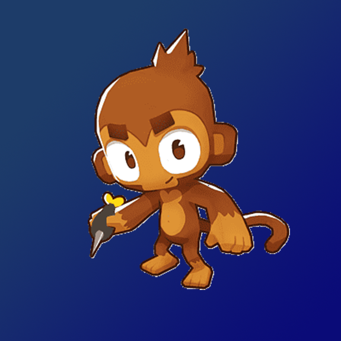
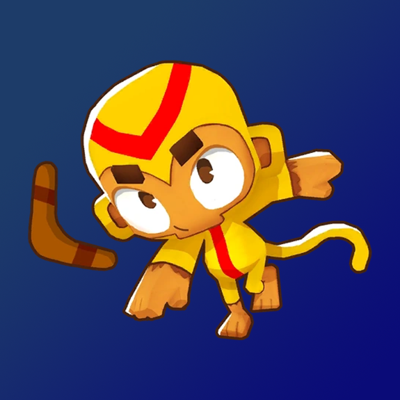
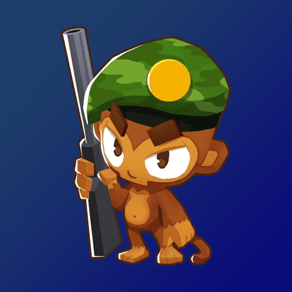
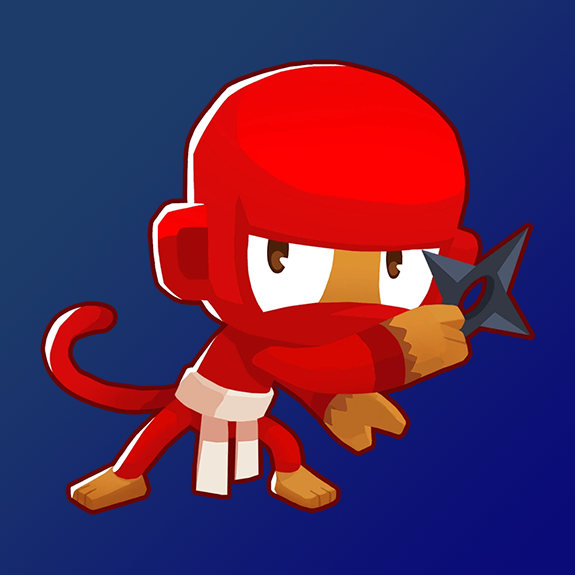
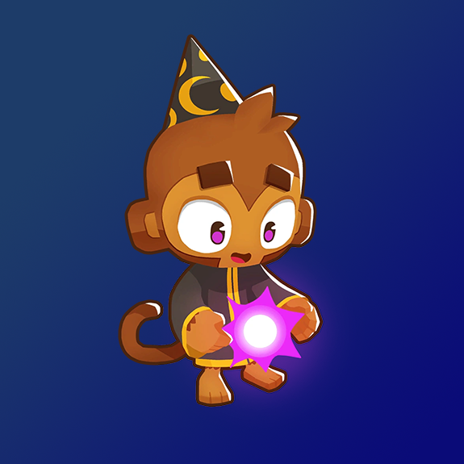
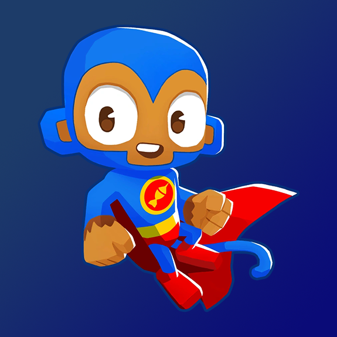

-
Dart Monkey
FreeThe Dart Monkey is a Primary-class tower that was released in the initial release of Bloons TD 6. The tower retains its name and role from the Bloons TD 4, 5, and Classic game generations, with significant additions. It was the first non-hero tower to be revealed for Bloons TD 6, introduced on around 26th April 2018. Dart Monkey, as with previous mainstream games, is the first tower to be unlocked in the game, and is introduced by the Tutorial Monkey as part of the tutorial for Bloons TD 6.
DPS: 1| RNG: 32Boomerang Monkey
$265The Boomerang Monkey is a Primary-class tower that was released in the initial release of Bloons TD 6. The tower retains its role from the Bloons TD 4, 5, and Classic game generations, but has changed its name from "Boomerang Thrower" along with other significant changes. Like most Primary Monkeys, the Boomerang Monkey was featured in a teaser prior to the game's release.
DPS: 1.2| RNG: 42Ice Monkey
$425Ice Monkey is a Primary-class tower in Bloons TD 6. The tower retains its role from the Bloons TD 4, 5, and Classic game generations, but has changed its name from "Ice Tower" along with other significant changes (though the tower was actually called Ice Monkey in Bloons Monkey City). Like most Primary Monkeys, the Ice Monkey was featured in a teaser prior to the game's release.
DPS: 1.5| RNG: 20Sniper Monkey
$300Sniper Monkey is a Military-class tower in Bloons TD 6. The tower retains its name and role from the Bloons TD 5 Generation, with significant additions. It received several teasers prior to release, showing a base Sniper interacting with Line of Sight on Hedge and Town Center.
DPS: 1.59| RNG: InfNinja Monkey
$340The Ninja Monkey is a Magic-class tower that was released in the initial release of Bloons TD 6. The tower retains its name and role from the Bloons TD 5 generation, with significant additions. It did not receive any teasers prior to release, but it was first shown when the game was available to select YouTubers several days before BTD6's official release date.
DPS: 0.62| RNG: 40Wizard Monkey
$275The Wizard Monkey is a Magic-class tower that was released in the initial release of Bloons TD 6. The tower retains its role from the Bloons TD 4 and Bloons TD 5 game generations, with a name change from "Monkey Apprentice" alongside other significant changes. It did not receive any teasers prior to release, but it was first shown when the game was available to select YouTubers several days before BTD6's official release date.
DPS: 1.1| RNG: 40|Super Monkey
$2,125The Super Monkey is a Magic-class tower that was included in the initial release of Bloons TD 6. The tower retains its name and role from the Bloons TD 4, 5, and Classic game generations, with major additions. The Super Monkey did not receive any teasers prior to release, but was first shown when the game was made available to select YouTubers several days before BTD6's official release date.
DPS: 0.045| RNG: 50